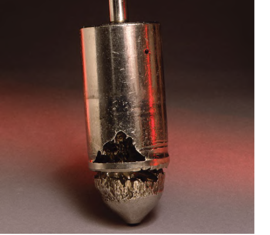

Flashing Damage vs. Cavitation Damage
Flashing damage

Smooth and polished — a clean erosion pattern with no pitting
Cavitation damage

Rough and cinder-like — a pitted, gouged surface from repeated bubble-collapse impacts
The visual signature alone, with no pressure data available, is enough to tell which mechanism produced a given piece of failed trim. Control Valve Handbook, 6th ed., Figs. 5.8, 5.9, pp.129-130 — used directly. Component Index: cvh-cmp-flashing-damage-photo, cvh-cmp-cavitation-damage-photo.